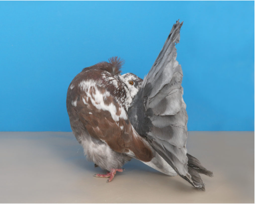
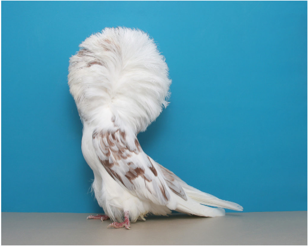
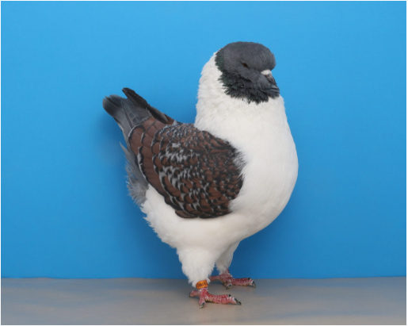
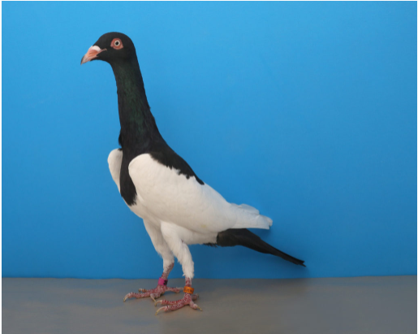

FANCY BREEDS
These pigeons are kept for their gorgeous color, form, and texture. I remember fondly going to the New York State fair, annually and visiting the poultry building. I would spend hours on the second floor which was dedicated to the whimsical types of pigeons New York fanciers had to offer. These exhibition breeds included Fantails, Jacobins, Owls, Pouters, Tumblers, and Modenas.
What do pigeons eat?
Knowing what to feed pigeons depends on the breed. Some types of pigeons, because of their beak and head size, may require only the smallest of seed and grain.
-
Fantail
Too little space for peafowl? Add a flock of Fantail pigeons to your yard for a fraction of the space.
Photo by Layne Gardner. -
Jacobin
This red splash Jacobin radiates elegance. Photo by Layne Gardner.
-
African Owl

Originating in Tunisia, African owl pigeons have short and stout beaks, requiring small seed. This khaki pied individual is an amazing example of artificial selection.
Photo by Layne Gardner. -
Chinese Owl

Looking for a blown-out feather look? Look no further than this Chinese Owl whose variety is blue bar.
Photo by Layne Gardner. -
Modena
Looking for a bird with curves? Try a bronze tri gazzi Modena.
Photo by Layne Gardner. -
Magpie
Originally part of the tumbler group, this black Magpie pigeon is predominately used as a show bird in the U.S
Photo by Layne Gardner.